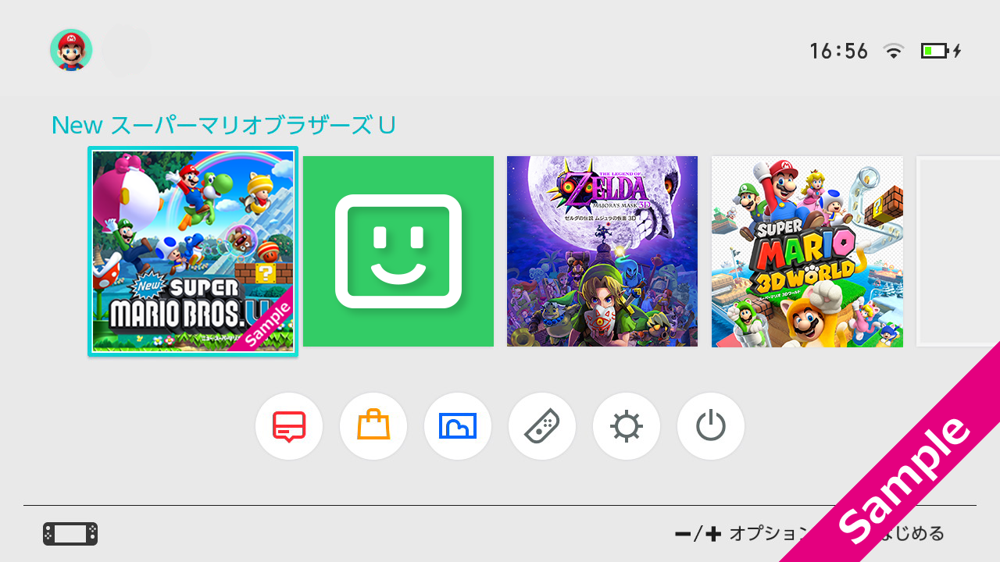

Nintendo is using application icon as an easily understandable term, but we recommend a higher-density image for Switch that combines the application's main visual with logo, as you would see for a game software package.
We do not recommend the simpler images that were commonly used for the Nintendo 3DS and elsewhere.
|
|
Sample Application Icon Images | Description |
|
Recommended |
|
An image that densely combines a main visual and a logo. |
|
Not Recommended |
|
A simple, plainer image. |
As shown in the following image, you run the risk of an icon's excessive simplicity standing out if you use a simple, plainer icon.

Note: The design of the Switch HOME Menu is not yet finalized.
Avoid enlarging a low-resolution image and using it as an icon.
|
|
Sample Application Icon Images | Description |
|
Recommended |
|
An image with an appropriate resolution. |
|
Not Recommended |
|
Icon images created from low-resolution images. |
For more information about designing Switch application icons, see 3 Designing Application Icons.
The sample application icon images used on this page are either from existing Wii U or Nintendo 3DS applications, or are artistic conceptions. They are not for applications that will be available for Switch.
An application icon can be specified for each language, and the icon that corresponds to the language and region configured in the system settings is displayed.
For more information, see How Display Languages Work in Nintendo Switch System Feature Guide Attachments.
The application icons are displayed in the HOME Menu, Entrance, and other areas. The size varies depending on where the icon is displayed.
We recommend using a different application icon to make it easier to differentiate demo software when starting applications or when managing data.
For the various rules that applications must follow, see the Nintendo Switch Guidelines.
CONFIDENTIAL